Introduction
AMRgen is a comprehensive R package designed to
integrate antimicrobial resistance genotype and phenotype data. It
provides tools to:
Import AMR genotype data (e.g. from AMRFinderPlus, hAMRonization)
Import AST phenotype data (e.g. public data from NCBI or EBI, or your own data in formats like Vitek or WHOnet)
Conduct genotype-phenotype analyses to explore the impact of genotypic markers on phenotype, including via logistic regression, solo marker analysis, and upset plots
Fetch MIC or disk zone reference distributions from EUCAST
This vignette walks through a basic workflow using example datasets
included in the AMRgen package, and explains how to wrangle
your own data files into the right formats to use the same workflow.
Start by loading the package:
library(AMRgen)
library(dplyr)
#>
#> Attaching package: 'dplyr'
#> The following objects are masked from 'package:stats':
#>
#> filter, lag
#> The following objects are masked from 'package:base':
#>
#> intersect, setdiff, setequal, union1. Genotype table
The import_amrfp() function lets you load genotype data
from AMRFinderPlus output files, and process it to generate an object
with the key columns needed to work with the AMRgen
package.
# Example AMRFinderPlus genotyping output (from Allthebacteria project)
ecoli_geno_raw
#> # A tibble: 45,228 × 28
#> Name `Protein identifier` `Contig id` Start Stop Strand `Gene symbol`
#> <chr> <lgl> <chr> <dbl> <dbl> <chr> <chr>
#> 1 SAMN0317… NA SAMN031776… 74721 75851 - blaEC
#> 2 SAMN0317… NA SAMN031776… 166214 169315 + acrF
#> 3 SAMN0317… NA SAMN031776… 20678 22033 - glpT_E448K
#> 4 SAMN0317… NA SAMN031776… 758 1969 - floR
#> 5 SAMN0317… NA SAMN031776… 4440 5666 + mdtM
#> 6 SAMN0317… NA SAMN031776… 3941 4798 + blaTEM-1
#> 7 SAMN0317… NA SAMN031776… 142 954 + sul2
#> 8 SAMN0317… NA SAMN031776… 1018 1818 + aph(3'')-Ib
#> 9 SAMN0317… NA SAMN031776… 1821 2654 + aph(6)-Id
#> 10 SAMN0317… NA SAMN031776… 788 1957 + tet(A)
#> # ℹ 45,218 more rows
#> # ℹ 21 more variables: `Sequence name` <chr>, Scope <chr>,
#> # `Element type` <chr>, `Element subtype` <chr>, Class <chr>, Subclass <chr>,
#> # Method <chr>, `Target length` <dbl>, `Reference sequence length` <dbl>,
#> # `% Coverage of reference sequence` <dbl>,
#> # `% Identity to reference sequence` <dbl>, `Alignment length` <dbl>,
#> # `Accession of closest sequence` <chr>, `Name of closest sequence` <chr>, …
# Load AMRFinderPlus output
ecoli_geno <- import_amrfp(
input_table = ecoli_geno_raw, # (replace 'ecoli_geno_raw' with the filepath for any AMRFinderPlus output)
sample_col = "Name",
# you can optionally specify the below key column names if they differ in your dataframe to standard AMRFinderPlus outputs
element_symbol_col = "Gene symbol", # or "Element symbol"
element_type_col = "Element type", # or "Type"
element_subtype_col = "Element subtype",
method_col = "Method",
node_col = "Hierarchy node",
subclass_col = "Subclass",
class_col = "Class"
)
# Check the format of the processed genotype table
head(ecoli_geno)
#> # A tibble: 6 × 37
#> Name gene mutation drug_agent drug_class `variation type` node marker
#> <chr> <chr> <chr> <ab> <chr> <chr> <chr> <chr>
#> 1 SAMN031776… blaEC NA NA Beta-lact… Gene presence d… blaEC blaEC
#> 2 SAMN031776… acrF NA NA Efflux Gene presence d… acrF acrF
#> 3 SAMN031776… glpT Glu448L… FOS Phosphoni… Protein variant… glpT glpT_…
#> 4 SAMN031776… floR NA CHL Phenicols Gene presence d… floR floR
#> 5 SAMN031776… floR NA FLR Phenicols Gene presence d… floR floR
#> 6 SAMN031776… mdtM NA NA Efflux Gene presence d… mdtM mdtM
#> # ℹ 29 more variables: marker.label <chr>, `Protein identifier` <lgl>,
#> # `Contig id` <chr>, Start <dbl>, Stop <dbl>, Strand <chr>,
#> # `Gene symbol` <chr>, `Sequence name` <chr>, Scope <chr>,
#> # `Element type` <chr>, `Element subtype` <chr>, Class <chr>, Subclass <chr>,
#> # Method <chr>, `Target length` <dbl>, `Reference sequence length` <dbl>,
#> # `% Coverage of reference sequence` <dbl>,
#> # `% Identity to reference sequence` <dbl>, `Alignment length` <dbl>, …The genotype table has one row for each genetic marker detected in an input genome, i.e. one per strain/marker combination. This means your output table may end up with more columns than your input table, as markers conferring resistance to multiple drug classes will be expanded into several rows.
If your genotype data is not in AMRFinderPlus format, you can wrangle
other input data files into the necessary format. If only your column
names differ to standard AMRFinderPlus inputs, you can specify these
using element_symbol_col, element_type_col,
element_subtype_col, method_col,
node_col, subclass_col and
class_col.
The essential columns for a genotype table to work with downstream
AMRgen functions are:
Name: character string giving the sample name, used to link to sample names in the phenotype file (this column can have a different name, in which case you’ll need to make sure it is the first column in the dataframe OR pass its name to the functions usinggeno_sample_col)marker: character string giving the name of the genetic marker detecteddrug_class: character string giving the antibiotic class associated with this marker
NOTE: You should consider whether you have genomes with no AMR
markers detected by genotyping, and how to make sure these are include
in your analyses. E.g. AMRFinderPlus will output one row per
genome/marker combination, but if you have a genome with no markers
detected, there will be no row at all for that genome in the
concatenated output file. If your species has core genes included in
AMRFinderPlus this probably won’t be a problem as you would expect some
calls for every genome (e.g. AMRFinderPlus will report blaSHV, oqxA,
oqxB, fosA in all Klebsiella pneumoniae genomes, so all input genomes
will appear in the concatenated output file). An easy solution is to run
a check to make sure that all genome names in your input dataset are
represented in the genotype table, and if any are missing add empty rows
for these using
e.g. tibble(Name=missing_samples) %>% bind_rows(genotype_table).
You can summarise the content of a genotype table using the inbuilt
summarise_geno() function.
ecoli_geno_summary <- summarise_geno(ecoli_geno)
# Number of unique samples, markers, genes, drugs, classes, and variation types
ecoli_geno_summary$uniques
#> # A tibble: 6 × 2
#> column n_unique
#> <chr> <int>
#> 1 Name 5258
#> 2 marker 244
#> 3 drug_agent 35
#> 4 drug_class 26
#> 5 gene 196
#> 6 variation type 5
# Unique counts of samples, markers, genes, drugs, and classes - per variation type
ecoli_geno_summary$pertype
#> # A tibble: 5 × 6
#> `variation type` Name marker drug_agent drug_class gene
#> <chr> <int> <int> <int> <int> <int>
#> 1 Gene presence detected 5258 164 22 17 164
#> 2 Inactivating mutation detected 615 42 15 14 42
#> 3 Nucleotide variant detected 57 2 3 3 1
#> 4 Promoter variant detected 93 4 1 1 1
#> 5 Protein variant detected 4920 65 18 16 21The summarise_geno() function also returns a list of
drugs and classes represented in the table, and the associated number of
unique markers, unique samples, and total hits for each drug/class.
Ordering by sample count, we see the most common class is efflux… there
are only 3 efflux-associated markers but there are 11,828 hits to these
across 5,258 samples (i.e. all samples have at least one). Next most
common are markers associated with beta-lactams… there are 22 different
markers with 6,379 hits across 4,989 of our 5,258 samples.
ecoli_geno_summary$drugs
#> # A tibble: 44 × 6
#> drug_agent antibiotic drug_class markers samples hits
#> <ab> <chr> <chr> <int> <int> <int>
#> 1 AMC Amoxicillin/clavulanic acid Aminopenicillins 2 57 57
#> 2 AMK Amikacin Aminoglycosides 6 176 180
#> 3 AMP Ampicillin Aminopenicillins 6 749 749
#> 4 APR Apramycin Aminoglycosides 1 98 98
#> 5 ATM Aztreonam Monobactams 2 39 39
#> 6 AZM Azithromycin Macrolides 4 472 478
#> 7 BLM Bleomycin Glycopeptides 2 40 40
#> 8 CHL Chloramphenicol Phenicols 15 1121 1181
#> 9 CLI Clindamycin Lincosamides 1 26 26
#> 10 CLR Clarithromycin Macrolides 1 1 1
#> # ℹ 34 more rows
# Order by sample count per drug/class
ecoli_geno_summary$drugs %>% arrange(-samples)
#> # A tibble: 44 × 6
#> drug_agent antibiotic drug_class markers samples hits
#> <ab> <chr> <chr> <int> <int> <int>
#> 1 NA NA Efflux 3 5258 11828
#> 2 NA NA Beta-lactams 22 4989 6379
#> 3 FOS Fosfomycin Phosphonics 9 4861 6411
#> 4 COL Colistin Polymyxins 11 3415 3436
#> 5 NA NA Tetracyclines 13 2634 2929
#> 6 NA NA Quinolones 45 1822 4497
#> 7 STR1 Streptomycin Aminoglycosides 13 1669 3291
#> 8 SSS Sulfonamide Sulfonamides 5 1500 1876
#> 9 CHL Chloramphenicol Phenicols 15 1121 1181
#> 10 NA NA Cephalosporins (3rd gen.) 32 1065 1285
#> # ℹ 34 more rowsOrdering by marker count, we see the classes with the most different markers associated are quinolones (45 unique markers detected across 1,822 unique samples), third generation cephalosporins (32 unique markers detected across 1,065 unique samples) and beta-lactams (22 unique markers detected across 4,989 unique samples).
ecoli_geno_summary$drugs %>% arrange(-markers)
#> # A tibble: 44 × 6
#> drug_agent antibiotic drug_class markers samples hits
#> <ab> <chr> <chr> <int> <int> <int>
#> 1 NA NA Quinolones 45 1822 4497
#> 2 NA NA Cephalosporins (3rd gen.) 32 1065 1285
#> 3 NA NA Beta-lactams 22 4989 6379
#> 4 NA NA Trimethoprims 16 824 877
#> 5 CHL Chloramphenicol Phenicols 15 1121 1181
#> 6 GEN Gentamicin Aminoglycosides 14 687 704
#> 7 STR1 Streptomycin Aminoglycosides 13 1669 3291
#> 8 NA NA Carbapenems 13 62 64
#> 9 NA NA Tetracyclines 13 2634 2929
#> 10 COL Colistin Polymyxins 11 3415 3436
#> # ℹ 34 more rowsThe summarise_geno() function also returns a list of
markers represented in the table, annotated with the associated
drugs/classes and variation types. The column ‘n’ indicates the count of
hits detected per marker. Ordering by this column, we see the most
common markers are acrF, blaEC and glpT_E448K.
ecoli_geno_summary$markers %>% arrange(-n)
#> # A tibble: 349 × 6
#> marker drug_agent antibiotic drug_class `variation type` n
#> <chr> <ab> <chr> <chr> <chr> <int>
#> 1 acrF NA NA Efflux Gene presence detected 5002
#> 2 blaEC NA NA Beta-lactams Gene presence detected 4749
#> 3 glpT_E448K FOS Fosfomycin Phosphonics Protein variant detected 4731
#> 4 mdtM NA NA Efflux Gene presence detected 3675
#> 5 emrD NA NA Efflux Gene presence detected 2914
#> 6 pmrB_E123D COL Colistin Polymyxins Protein variant detected 1873
#> 7 pmrB_Y358N COL Colistin Polymyxins Protein variant detected 1531
#> 8 blaTEM-1 NA NA Beta-lactams Gene presence detected 1279
#> 9 uhpT_E350Q FOS Fosfomycin Phosphonics Protein variant detected 1145
#> 10 tet(A) NA NA Tetracyclines Gene presence detected 1087
#> # ℹ 339 more rowsFiltering specifically for markers associated with quinolones, we can find out more about the 45 markers for this class that were found in the dataset. Summarising by variation type, we see there are 12 markers indicating detection of an acquired gene, 2 indicating inactivating mutaions, and 31 indicating protein mutations. Sorting by marker frequency, we can see the full list of 45 unique markers and that the most common is a protein variant in gyrA, gyrA_S83L. Filtering to “Gene presence detected” we can that the most common acquired gene was aac(6’)-Ib-cr5.
# Count the different types of variants found
ecoli_geno_summary$markers %>%
filter(drug_class == "Quinolones") %>%
count(`variation type`)
#> # A tibble: 3 × 2
#> `variation type` n
#> <chr> <int>
#> 1 Gene presence detected 12
#> 2 Inactivating mutation detected 2
#> 3 Protein variant detected 31
# Sort by marker frequency to see the most common markers
ecoli_geno_summary$markers %>%
filter(drug_class == "Quinolones") %>%
arrange(-n)
#> # A tibble: 45 × 6
#> marker drug_agent antibiotic drug_class `variation type` n
#> <chr> <ab> <chr> <chr> <chr> <int>
#> 1 gyrA_S83L NA NA Quinolones Protein variant detect… 855
#> 2 marR_S3N NA NA Quinolones Protein variant detect… 726
#> 3 parC_S80I NA NA Quinolones Protein variant detect… 639
#> 4 gyrA_D87N NA NA Quinolones Protein variant detect… 622
#> 5 parE_I529L NA NA Quinolones Protein variant detect… 442
#> 6 parC_E84V NA NA Quinolones Protein variant detect… 294
#> 7 aac(6')-Ib-cr5 NA NA Quinolones Gene presence detected 153
#> 8 parE_D475E NA NA Quinolones Protein variant detect… 147
#> 9 parE_L416F NA NA Quinolones Protein variant detect… 134
#> 10 parE_S458A NA NA Quinolones Protein variant detect… 111
#> # ℹ 35 more rows
# Filter to acquired genes and sort by frequency, to see the most common acquired genes
ecoli_geno_summary$markers %>%
filter(drug_class == "Quinolones" & `variation type` == "Gene presence detected") %>%
arrange(-n)
#> # A tibble: 12 × 6
#> marker drug_agent antibiotic drug_class `variation type` n
#> <chr> <ab> <chr> <chr> <chr> <int>
#> 1 aac(6')-Ib-cr5 NA NA Quinolones Gene presence detected 153
#> 2 qnrS1 NA NA Quinolones Gene presence detected 61
#> 3 qnrB19 NA NA Quinolones Gene presence detected 36
#> 4 qnrB4 NA NA Quinolones Gene presence detected 11
#> 5 qnrB1 NA NA Quinolones Gene presence detected 3
#> 6 qnrB2 NA NA Quinolones Gene presence detected 3
#> 7 qepA1 NA NA Quinolones Gene presence detected 2
#> 8 qnrA1 NA NA Quinolones Gene presence detected 2
#> 9 qnrB6 NA NA Quinolones Gene presence detected 2
#> 10 qnrS2 NA NA Quinolones Gene presence detected 2
#> 11 qnrB NA NA Quinolones Gene presence detected 1
#> 12 qnrB7 NA NA Quinolones Gene presence detected 12. Phenotype table
The import_ast() function imports AST data from NCBI or
other standard formats
# Example E. coli AST data from NCBI
# This one has already been imported and phenotypes interpreted from assay data
ecoli_ast
#> # A tibble: 4,168 × 11
#> id drug_agent mic disk pheno_clsi ecoff guideline method platform
#> <chr> <ab> <mic> <dsk> <sir> <sir> <chr> <chr> <chr>
#> 1 SAMN11638… CIP 256.00 NA R NWT CLSI broth… NA
#> 2 SAMN05729… CIP 64.00 NA R NWT CLSI Etest Etest
#> 3 SAMN10620… CIP >=4.00 NA R NWT CLSI broth… NA
#> 4 SAMN10620… CIP >=4.00 NA R NWT CLSI broth… NA
#> 5 SAMN10620… CIP <=0.25 NA S NI CLSI broth… NA
#> 6 SAMN10620… CIP >=4.00 NA R NWT CLSI broth… NA
#> 7 SAMN10620… CIP >=4.00 NA R NWT CLSI broth… NA
#> 8 SAMN10620… CIP >=4.00 NA R NWT CLSI broth… NA
#> 9 SAMN10620… CIP >=4.00 NA R NWT CLSI broth… NA
#> 10 SAMN04122… CIP 1.00 NA R NWT CLSI broth… Vitek
#> # ℹ 4,158 more rows
#> # ℹ 2 more variables: pheno_provided <sir>, spp_pheno <mo>
head(ecoli_ast)
#> # A tibble: 6 × 11
#> id drug_agent mic disk pheno_clsi ecoff guideline method platform
#> <chr> <ab> <mic> <dsk> <sir> <sir> <chr> <chr> <chr>
#> 1 SAMN116383… CIP 256.00 NA R NWT CLSI broth… NA
#> 2 SAMN057299… CIP 64.00 NA R NWT CLSI Etest Etest
#> 3 SAMN106201… CIP >=4.00 NA R NWT CLSI broth… NA
#> 4 SAMN106201… CIP >=4.00 NA R NWT CLSI broth… NA
#> 5 SAMN106201… CIP <=0.25 NA S NI CLSI broth… NA
#> 6 SAMN106201… CIP >=4.00 NA R NWT CLSI broth… NA
#> # ℹ 2 more variables: pheno_provided <sir>, spp_pheno <mo>
# You can make your own from different file formats, and interpret against breakpoints, using:
# import_ast("filepath/NCBI_AST.tsv", format="ncbi", interpret_clsi=T)
# import_ast("filepath/Vitek_AST.tsv", format="vitek", interpret_eucast=T)Data can be imported from various standard formats using the
import_ast function, and re-interpreted using latest
breakpoints and/or ECOFF. Use ?import_ast to see the
available formats and other options.
If your assay data is not in a standard format, you can wrangle other
input data files into the necessary format, manually and/or with the
help of the format_ast function.
?import_ast
?format_astThe phenotype table is long form, with one row for each assay measurement, i.e. one per strain/drug combination.
The essential columns for a phenotype table to work with
AMRgen functions are:
id: character string giving the sample name, used to link to sample names in the genotype file (this column can have a different name, in which case you’ll need to make sure it is the first column in the dataframe OR pass its name to the functions usingpheno_sample_col)spp_pheno: species in the form of an AMR packagemoclass (can be created from a column with species name as string, usingAMR::as.mo(species_string))drug_agent: antibiotic name in the form of an AMR packageabclass (can be created from a column with antibiotic name as string, usingAMR::as.ab(antibiotic_string))a phenotype column, e.g. the import functions output fields
pheno_eucast,pheno_clsi,pheno_provided,ecoff: S/I/R phenotype calls in the form of an AMR packagesirclass (can be created from a column with phenotype values as string, usingAMR::as(sir_string), or generated by interpreting MIC or disk assay data usingAMR::as.sir)
If you want to do analyses with raw assay data (e.g. upset plots) you will need that data in one or both of:
mic: MIC in the form of an AMR packagemicclass (can be created from a column with assay values as string, usingAMR::as.mic(mic_string))disk: disk diffusion zone diameter in the form of an AMR packagediskclass (can be created from a column with assay values as string, usingAMR::as.disk(disk_string))
The import functions also standardise names for the following common fields:
method: The laboratory testing method (e.g., “MIC”, “disk diffusion”, “Etest”, “agar dilution”)platform: The laboratory testing platform/instrument if relevant (e.g., “Vitek”, “Phoenix”, “Sensititre”).guideline: The testing standard recorded in the input file as being used to make the provided phenotype interpretations (e.g. “CLSI”, “EUCAST”)source: An identifier for the dataset from which each data point was sourced (e.g. study or hospital name, pubmed ID, bioproject accession).
3. Plot phenotype data distribution
It is always a good idea to check the distribution of raw AST data
that we have to work with. The function assay_by_var() can
be used to plot the distribution of MIC or disk measurements, coloured
by a variable.
# Example E. coli AST data from NCBI
# Plot MIC distribution, coloured by CLSI S/I/R call
assay_by_var(pheno_table = ecoli_ast, antibiotic = "Ciprofloxacin", measure = "mic", colour_by = "pheno_clsi")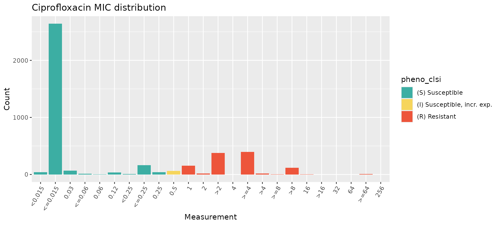
It’s a good idea to make sure that the SIR field in the
input data file has been interpreted correctly against the breakpoints.
The AMRgen function checkBreakpoints() can be used to help
look up breakpoints in the AMR package. Or, if you provide
the function assay_by_var() with a species and guideline,
it can look up the breakpoints and ECOFF and annotate these directly on
the plot.
# Look up breakpoints recorded in the AMR package
checkBreakpoints(species = "E. coli", guide = "CLSI 2025", antibiotic = "Ciprofloxacin", assay = "MIC")
#> MIC breakpoints determined using AMR package: S <= 0.25 and R > 1
#> $breakpoint_S
#> [1] 0.25
#>
#> $breakpoint_R
#> [1] 1
#>
#> $bp_standard
#> [1] "-"
# Specify species and guideline, to annotate with CLSI breakpoints
assay_by_var(pheno_table = ecoli_ast, antibiotic = "Ciprofloxacin", measure = "mic", colour_by = "pheno_clsi", species = "E. coli", guideline = "CLSI 2025")
#> MIC breakpoints determined using AMR package: S <= 0.25 and R > 1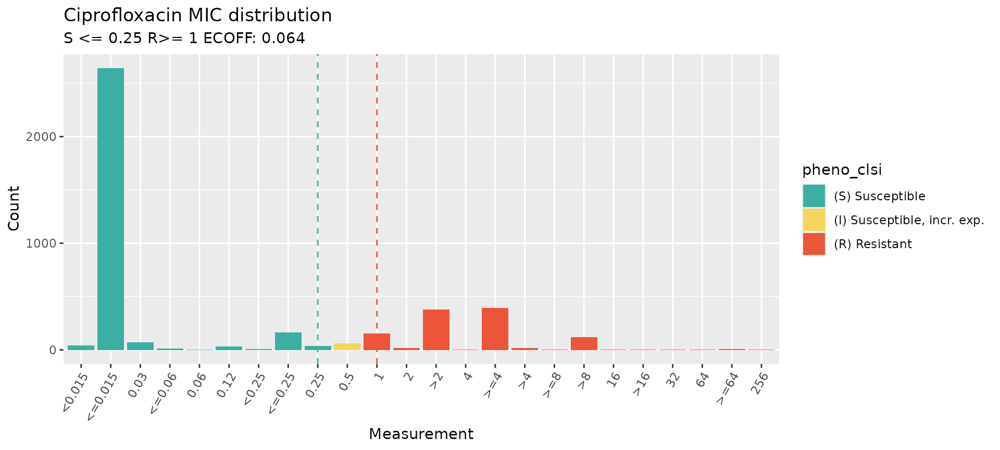
When aggregating AST data from different methods and sources, it is a
good idea to check the distributions broken down by method or source.
This can be done easily by passing the assay_by_var()
function a variable name to facet by, which means a separate
distribution will be plotted for each value of that variable (e.g. each
type of ‘method’ in our AST test data). Note that this public data from
NCBI includes non-standard values in the platform (Sensititre /
Sensititer) in the platform
# specify facet_var="method" to generate facet plots by assay method
mic_by_platform <- assay_by_var(pheno_table = ecoli_ast, antibiotic = "Ciprofloxacin", measure = "mic", colour_by = "pheno_clsi", species = "E. coli", guideline = "CLSI 2025", facet_var = "method")
#> MIC breakpoints determined using AMR package: S <= 0.25 and R > 1
mic_by_platform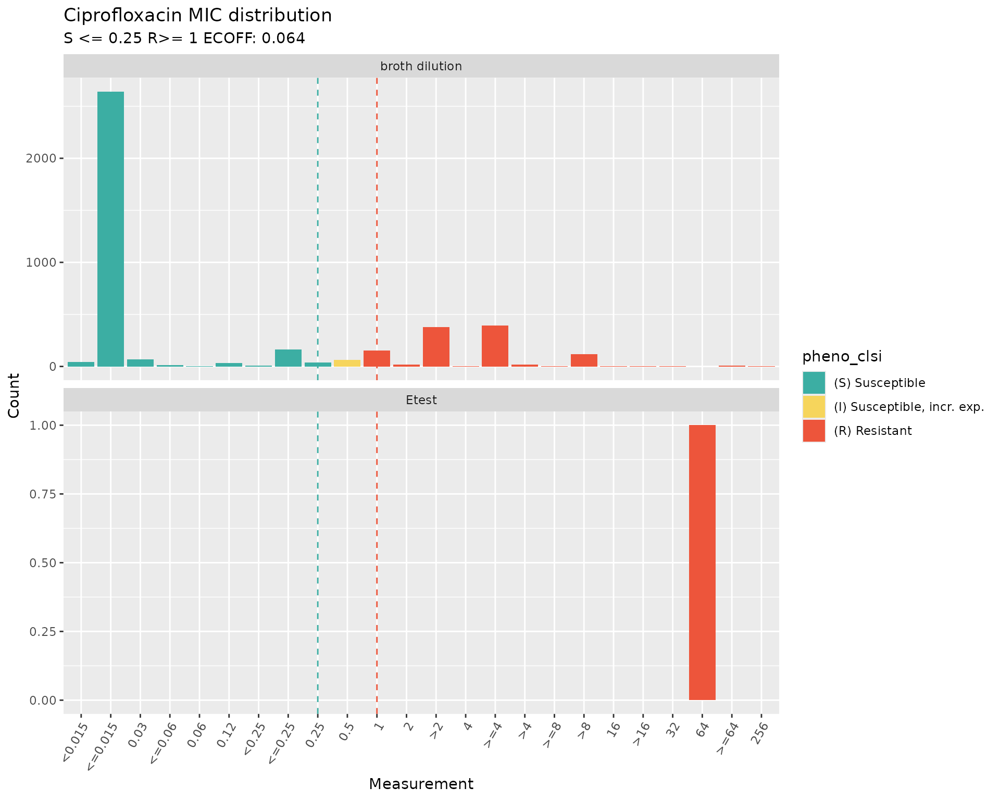
4. Download reference assay distributions and compare to your data
It can also be helpful to check how your MIC or disk zone distribution compares to the reference distributions, to get a sense of whether your assays were calibrated correctly or if there may be some issues with a given dataset. AMRgen has functions to download the latest reference distributions from EUCAST (mic.eucast.org), and plot them on their own or with your data overlaid.
# get MIC distribution for ciprofloxacin, for all organisms
cip_mic_data <- get_eucast_mic_distribution("cipro")
# specify microorganism to only get results for that pathogen
ecoli_cip_mic_data <- get_eucast_mic_distribution("cipro", "E. coli")
# get disk diffusion data instead
ecoli_cip_disk_data <- get_eucast_disk_distribution("cipro", "E. coli")
# Ciprofloxacin MIC reference distribution for E. coli
ecoli_cip_mic_data
#> # A tibble: 19 × 2
#> mic count
#> <mic> <int>
#> 1 0.002 14
#> 2 0.004 189
#> 3 0.008 3952
#> 4 0.016 7238
#> 5 0.030 1355
#> 6 0.060 356
#> 7 0.125 401
#> 8 0.250 521
#> 9 0.500 171
#> 10 1.000 94
#> 11 2.000 47
#> 12 4.000 119
#> 13 8.000 246
#> 14 16.000 229
#> 15 32.000 564
#> 16 64.000 166
#> 17 128.000 85
#> 18 256.000 59
#> 19 512.000 7
# Compare reference distribution to example E. coli data
ecoli_cip <- ecoli_ast$mic[ecoli_ast$drug_agent == "CIP"]
ecoli_cip_vs_ref <- compare_mic_with_eucast(ecoli_cip, ab = "cipro", mo = "E. coli")
ecoli_cip_vs_ref
#> # A tibble: 32 × 3
#> value user eucast
#> * <fct> <int> <int>
#> 1 0.002 0 14
#> 2 0.004 0 189
#> 3 0.008 0 3952
#> 4 <0.015 41 0
#> 5 <=0.015 2642 0
#> 6 0.016 0 7238
#> 7 0.03 69 1355
#> 8 <=0.06 11 0
#> 9 0.06 5 356
#> 10 0.12 34 0
#> # ℹ 22 more rows
#> Use ggplot2::autoplot() on this output to visualise.
ggplot2::autoplot(ecoli_cip_vs_ref)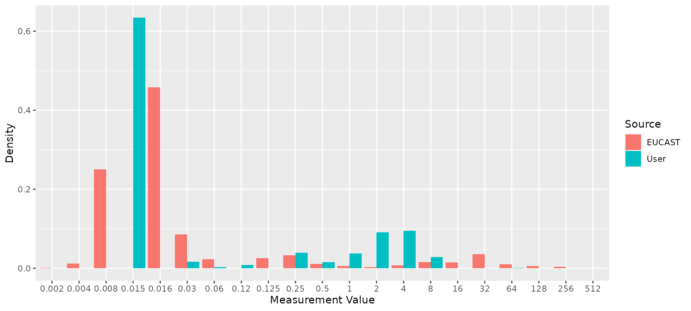
5. Combine genotype and phenotype data for a given drug
The genotype and phenotype tables can include data related to many
different drugs, but we need to analyse things one drug at a time. The
function get_binary_matrix() can be used to extract
phenotype data for a specified drug, and genotype data for markers
associated with a specified drug class. It returns a single dataframe
with one row per strain, for the subset of strains that appear in both
the genotype and phenotype input tables. Each row indicates, for one
strain, both the phenotypes (with SIR column, any assay columns if
desired, and boolean 1/0 coding of R and NWT status) and the genotypes
(one column per marker, with boolean 1/0 coding of marker
presence/absence).
# Get matrix combining phenotype data for ciprofloxacin, binary calls for R/NWT phenotype,
# and genotype presence/absence data for all markers associated with the relevant drug
# class (which are labelled "Quinolones" in AMRFinderPlus).
cip_bin <- get_binary_matrix(
ecoli_geno,
ecoli_ast,
antibiotic = "Ciprofloxacin",
drug_class_list = "Quinolones",
sir_col = "pheno_clsi",
keep_assay_values = TRUE,
keep_assay_values_from = "mic"
)
#> Defining NWT in binary matrix using ecoff column provided: ecoff
# check format
head(cip_bin)
#> # A tibble: 6 × 50
#> id pheno ecoff mic R NWT gyrA_S83L gyrA_D87Y gyrA_D87N parC_S80I
#> <chr> <sir> <sir> <mic> <dbl> <dbl> <dbl> <dbl> <dbl> <dbl>
#> 1 SAMN0… S WT <=0.015 0 0 0 0 0 0
#> 2 SAMN0… S WT <=0.015 0 0 0 0 0 0
#> 3 SAMN0… S WT <=0.015 0 0 0 0 0 0
#> 4 SAMN0… S NWT 0.250 0 1 1 0 0 0
#> 5 SAMN0… S NWT 0.120 0 1 0 1 0 0
#> 6 SAMN0… S WT <=0.015 0 0 0 0 0 0
#> # ℹ 40 more variables: parE_S458A <dbl>, parC_S80R <dbl>, parE_L416F <dbl>,
#> # qnrB6 <dbl>, gyrA_D87G <dbl>, parC_S57T <dbl>, parC_E84A <dbl>,
#> # soxS_A12S <dbl>, qnrB2 <dbl>, qnrS2 <dbl>, parC_E84K <dbl>,
#> # parC_A56T <dbl>, qnrB19 <dbl>, `aac(6')-Ib-cr5` <dbl>, parC_E84V <dbl>,
#> # parE_I529L <dbl>, parE_S458T <dbl>, parE_E460D <dbl>, parC_E84G <dbl>,
#> # qnrS1 <dbl>, marR_S3N <dbl>, `aac(6')-Ib-cr` <dbl>, soxR_R20H <dbl>,
#> # qnrB1 <dbl>, parE_I355T <dbl>, soxR_G121D <dbl>, qnrB4 <dbl>, qepA <dbl>, …
# list colnames, to see full list of quinolone markers included
colnames(cip_bin)
#> [1] "id" "pheno" "ecoff" "mic"
#> [5] "R" "NWT" "gyrA_S83L" "gyrA_D87Y"
#> [9] "gyrA_D87N" "parC_S80I" "parE_S458A" "parC_S80R"
#> [13] "parE_L416F" "qnrB6" "gyrA_D87G" "parC_S57T"
#> [17] "parC_E84A" "soxS_A12S" "qnrB2" "qnrS2"
#> [21] "parC_E84K" "parC_A56T" "qnrB19" "aac(6')-Ib-cr5"
#> [25] "parC_E84V" "parE_I529L" "parE_S458T" "parE_E460D"
#> [29] "parC_E84G" "qnrS1" "marR_S3N" "aac(6')-Ib-cr"
#> [33] "soxR_R20H" "qnrB1" "parE_I355T" "soxR_G121D"
#> [37] "qnrB4" "qepA" "gyrA_S83A" "qnrA1"
#> [41] "parE_D475E" "parC_A108V" "qepA1" "parE_E460K"
#> [45] "gyrA_S83W" "marR_R77C" "parE_L445H" "parE_I464F"
#> [49] "qnrB" "acrR_R45C"This binary matrix can be used as the starting a lot of downstream analyses.
For example, we can use it as input to assay_by_var to
plot the assay distribution coloured by presence of a particular genetic
marker
assay_by_var(cip_bin, measure = "mic", colour_by = "parC_S80I", antibiotic = "Ciprofloxacin")
#> WARNING: Column 'drug_agent' not found in phenotype table, so can't input matrix to specified antibiotic.
#> Ensure your input table is already filtered to the antibiotic.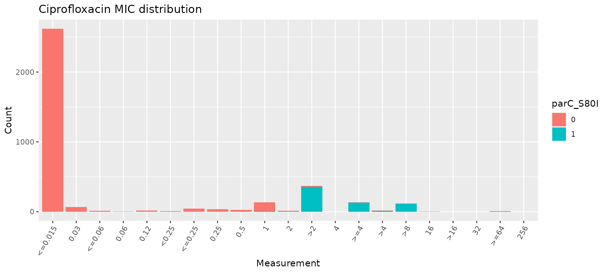
# count the number of gyrA mutations per genome
gyrA_mut <- cip_bin %>%
dplyr::mutate(gyrA_mut = rowSums(across(contains("gyrA_") & where(is.numeric)), na.rm = T)) %>%
select(mic, gyrA_mut)
# plot the MIC distribution, coloured by count of gyrA mutations
mic_by_gyrA_count <- assay_by_var(gyrA_mut, measure = "mic", colour_by = "gyrA_mut", colour_legend_label = "No. gyrA mutations", antibiotic = "Ciprofloxacin")
#> WARNING: Column 'drug_agent' not found in phenotype table, so can't input matrix to specified antibiotic.
#> Ensure your input table is already filtered to the antibiotic.
mic_by_gyrA_count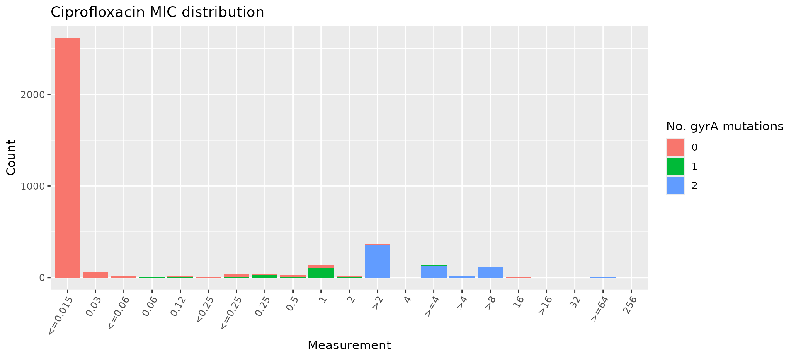
# count the number of genetic determinants per genome
marker_count <- cip_bin %>%
mutate(marker_count = rowSums(across(where(is.numeric) & !any_of(c("R", "NWT"))), na.rm = T)) %>%
select(mic, marker_count)
# plot the MIC distribution, coloured by count of associated genetic markers
mic_by_marker_count <- assay_by_var(marker_count, measure = "mic", colour_by = "marker_count", colour_legend_label = "No. markers detected", antibiotic = "Ciprofloxacin", bar_cols = viridisLite::viridis(max(marker_count$marker_count) + 1))
#> WARNING: Column 'drug_agent' not found in phenotype table, so can't input matrix to specified antibiotic.
#> Ensure your input table is already filtered to the antibiotic.
mic_by_marker_count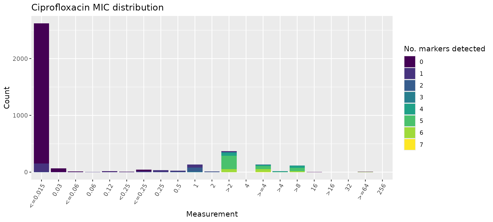
6. Model a binary drug phenotype using genetic marker presence/absence data
Logistic regression models can be informative to get an overview of the association between a drug resistance phenotype, and each marker thought to be associated with the relevant drug class.
The amr_logistic() function uses the
get_binary_matrix function to generate binary-coded
genotype and phenotype data for a specified drug and class; and fits two
logistic regression models of the form
R ~ marker1 + marker2 + marker3 + ... and
NWT ~ marker1 + marker2 + marker3 + ....
Note that the ‘NWT’ variable in the latter model can be taken either
from a precomputed ECOFF-based call of WT=wildtype/NWT=nonwildtype
(encoded in the input column ecoff_col), or computed from
the S/I/R phenotype as NWT=R/I and WT=S.
The amr_logistic() function can fit the model using
either the standard logistic regression approach implemented in the
glm() function, or Firth’s bias-reduced
penalized-likelihood logistic regression implemented in the
logistf package. The default is to use Firth’s regression,
as standard logistic regression can fail if there are too few
observations in some subgroups, which happens quite often with this kind
of data. To use glm() instead, set
glm=TRUE.
The function also filters out markers with too few observations in
the combined genotype/phenotype dataset. The default minimum is 10 but
this can be changed using the maf parameter (maf stands for
‘minor allele frequency’). If you are having trouble fitting models, it
may be because too many markers and combinations have very few
observations, and you might try increasing the maf value to
ensure that rare markers are excluded prior to model fitting.
Using this modelling approach, a negative association with a single marker and phenotype call of R and NWT is a strong indication that marker does not contribute to resistance. Note however that a positive association between a marker and R or NWT does not necessarily imply the marker is independently contributing to the resistance phenotype, as there may be non-independence between markers that is not adequately adjusted for by the model.
The function returns 4 objects:
modelR, modelNWT: data frames summarising each model, with beta coefficient, lower and upper values of 95% confidence intervals, and p-value for each marker (generated from the raw model output usinglogistf_details()orglm_details()as relevant)plot: a ggplot2 object generated from themodelRandmodelNWTobjects using thecompare_estimates()functionbin_mat: the binary matrix used as input to the regression models
# Manually run Firth's logistic regression model using the binary matrix produced above
dataR <- cip_bin[, setdiff(names(cip_bin), c("id", "pheno", "ecoff", "mic", "NWT"))]
dataR <- dataR[, colSums(dataR, na.rm = TRUE) > 5]
modelR <- logistf::logistf(R ~ ., data = dataR, pl = FALSE)
#> Warning in logistf::logistf(R ~ ., data = dataR, pl = FALSE): logistf.fit:
#> Maximum number of iterations for full model exceeded. Try to increase the
#> number of iterations or alter step size by passing 'logistf.control(maxit=...,
#> maxstep=...)' to parameter control
summary(modelR)
#> logistf::logistf(formula = R ~ ., data = dataR, pl = FALSE)
#>
#> Model fitted by Penalized ML
#> Coefficients:
#> coef se(coef) lower 0.95 upper 0.95 Chisq
#> (Intercept) -5.3175097 0.2633180 -5.8336034 -4.8014159 Inf
#> gyrA_S83L 5.1068379 0.3391112 4.4421922 5.7714836 Inf
#> gyrA_D87Y 0.6085750 1.9592283 -3.2314420 4.4485920 0.09648461
#> gyrA_D87N 1.0349517 1.2899342 -1.4932729 3.5631763 0.64373192
#> parC_S80I 3.5331411 1.2607159 1.0621833 6.0040989 7.85393846
#> parE_S458A -0.6705019 1.4210624 -3.4557329 2.1147292 0.22262490
#> parC_S80R 0.9079621 0.9428897 -0.9400679 2.7559920 0.92728574
#> parE_L416F 1.0858606 1.4754461 -1.8059607 3.9776818 0.54162839
#> parC_S57T 1.4187529 1.4556325 -1.4342344 4.2717401 0.94997028
#> soxS_A12S 1.5838463 1.4862202 -1.3290918 4.4967844 1.13568986
#> parC_A56T 2.6703270 1.5168050 -0.3025562 5.6432103 3.09934110
#> qnrB19 5.2773513 0.4540398 4.3874495 6.1672530 Inf
#> `aac(6')-Ib-cr5` 4.2828221 1.3434569 1.6496951 6.9159492 10.16278221
#> parC_E84V -0.6804449 1.7890326 -4.1868843 2.8259946 0.14466032
#> parE_I529L 2.2022178 0.4576747 1.3051918 3.0992437 23.15297055
#> parE_S458T -2.7640228 1.9475381 -6.5811274 1.0530817 2.01424047
#> parE_E460D -1.5249129 1.8857582 -5.2209311 2.1711053 0.65391016
#> parC_E84G 1.2081572 1.5876105 -1.9035023 4.3198167 0.57910718
#> qnrS1 5.5126904 0.4383455 4.6535490 6.3718319 Inf
#> marR_S3N 3.1530001 0.5135941 2.1463742 4.1596261 37.68841990
#> parE_I355T 1.9462857 0.8716735 0.2378370 3.6547344 4.98546287
#> soxR_G121D -2.5712233 1.6085720 -5.7239664 0.5815198 2.55504535
#> qnrB4 6.9269063 1.5713547 3.8471075 10.0067050 19.43256528
#> parE_D475E -0.7063419 1.4133734 -3.4765029 2.0638192 0.24975608
#> p method
#> (Intercept) 0.000000e+00 1
#> gyrA_S83L 0.000000e+00 1
#> gyrA_D87Y 7.560897e-01 1
#> gyrA_D87N 4.223626e-01 1
#> parC_S80I 5.071012e-03 1
#> parE_S458A 6.370471e-01 1
#> parC_S80R 3.355692e-01 1
#> parE_L416F 4.617586e-01 1
#> parC_S57T 3.297269e-01 1
#> soxS_A12S 2.865649e-01 1
#> parC_A56T 7.832399e-02 1
#> qnrB19 0.000000e+00 1
#> `aac(6')-Ib-cr5` 1.433042e-03 1
#> parC_E84V 7.036913e-01 1
#> parE_I529L 1.496119e-06 1
#> parE_S458T 1.558292e-01 1
#> parE_E460D 4.187182e-01 1
#> parC_E84G 4.466625e-01 1
#> qnrS1 0.000000e+00 1
#> marR_S3N 8.299580e-10 1
#> parE_I355T 2.556115e-02 1
#> soxR_G121D 1.099427e-01 1
#> qnrB4 1.042148e-05 1
#> parE_D475E 6.172469e-01 1
#>
#> Method: 1-Wald, 2-Profile penalized log-likelihood, 3-None
#>
#> Likelihood ratio test=3338.78 on 23 df, p=0, n=3629
#> Wald test = 514.8685 on 23 df, p = 0
# Extract model summary details using `logistf_details()`
modelR_summary <- logistf_details(modelR)
modelR_summary
#> # A tibble: 24 × 5
#> marker est ci.lower ci.upper pval
#> * <chr> <dbl> <dbl> <dbl> <dbl>
#> 1 (Intercept) -5.32 -5.83 -4.80 0
#> 2 gyrA_S83L 5.11 4.44 5.77 0
#> 3 gyrA_D87Y 0.609 -3.23 4.45 0.756
#> 4 gyrA_D87N 1.03 -1.49 3.56 0.422
#> 5 parC_S80I 3.53 1.06 6.00 0.00507
#> 6 parE_S458A -0.671 -3.46 2.11 0.637
#> 7 parC_S80R 0.908 -0.940 2.76 0.336
#> 8 parE_L416F 1.09 -1.81 3.98 0.462
#> 9 parC_S57T 1.42 -1.43 4.27 0.330
#> 10 soxS_A12S 1.58 -1.33 4.50 0.287
#> # ℹ 14 more rows
#> Use ggplot2::autoplot() on this output to visualise
# Plot the point estimates and 95% confidence intervals of the model
plot_estimates(modelR_summary)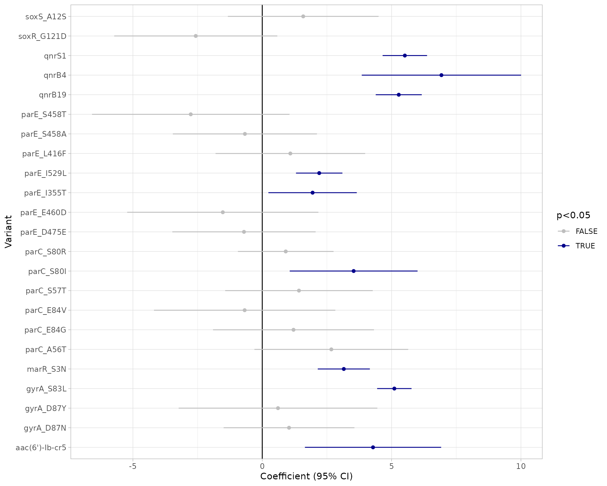
# Alternatively, use the amr_logistic() function to model R and NWT and plot the results together
models <- amr_logistic(
geno_table = ecoli_geno,
pheno_table = ecoli_ast,
sir_col = "pheno_clsi",
antibiotic = "Ciprofloxacin",
drug_class_list = c("Quinolones"),
maf = 10
)
#> Generating geno-pheno binary matrix
#> Defining NWT in binary matrix using ecoff column provided: ecoff
#> ...Fitting logistic regression model to R using logistf
#> Filtered data contains 3629 samples (793 => 1, 2836 => 0) and 19 variables.
#> Warning in logistf::logistf(R ~ ., data = to_fit, pl = FALSE): logistf.fit:
#> Maximum number of iterations for full model exceeded. Try to increase the
#> number of iterations or alter step size by passing 'logistf.control(maxit=...,
#> maxstep=...)' to parameter control
#> ...Fitting logistic regression model to NWT using logistf
#> Filtered data contains 3576 samples (875 => 1, 2701 => 0) and 19 variables.
#> Warning in logistf::logistf(NWT ~ ., data = to_fit, pl = FALSE): logistf.fit:
#> Maximum number of iterations for full model exceeded. Try to increase the
#> number of iterations or alter step size by passing 'logistf.control(maxit=...,
#> maxstep=...)' to parameter control
#> Generating plots
#> Plotting 2 models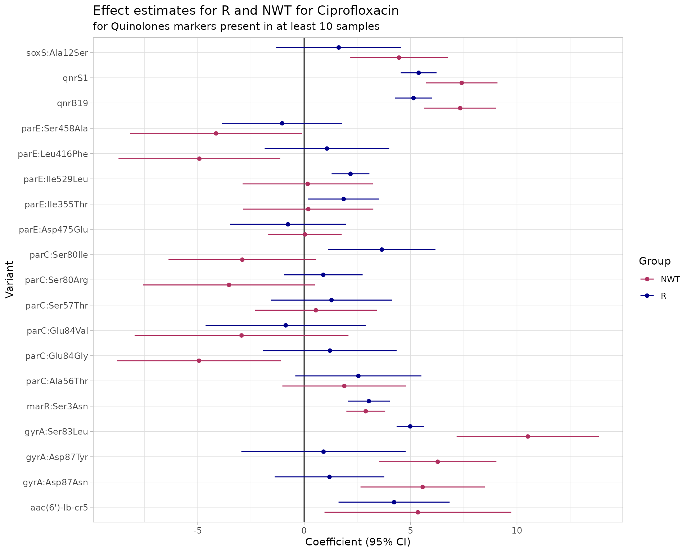
# Output tables
models$modelR
#> # A tibble: 20 × 5
#> marker est ci.lower ci.upper pval
#> <chr> <dbl> <dbl> <dbl> <dbl>
#> 1 (Intercept) -5.19 -5.67 -4.70 0
#> 2 gyrA:Ser83Leu 4.99 4.34 5.63 0
#> 3 gyrA:Asp87Tyr 0.912 -2.95 4.77 0.643
#> 4 gyrA:Asp87Asn 1.19 -1.38 3.77 0.364
#> 5 parC:Ser80Ile 3.65 1.12 6.17 0.00462
#> 6 parE:Ser458Ala -1.03 -3.85 1.79 0.473
#> 7 parC:Ser80Arg 0.900 -0.949 2.75 0.340
#> 8 parE:Leu416Phe 1.07 -1.85 4.00 0.473
#> 9 parC:Ser57Thr 1.29 -1.56 4.13 0.376
#> 10 soxS:Ala12Ser 1.62 -1.31 4.56 0.279
#> 11 parC:Ala56Thr 2.55 -0.415 5.51 0.0919
#> 12 qnrB19 5.14 4.27 6.01 0
#> 13 aac(6')-Ib-cr5 4.23 1.62 6.84 0.00150
#> 14 parC:Glu84Val -0.866 -4.63 2.90 0.652
#> 15 parE:Ile529Leu 2.18 1.29 3.07 0.00000151
#> 16 parC:Glu84Gly 1.21 -1.93 4.35 0.450
#> 17 qnrS1 5.38 4.54 6.22 0
#> 18 marR:Ser3Asn 3.04 2.06 4.02 0.00000000128
#> 19 parE:Ile355Thr 1.86 0.188 3.53 0.0292
#> 20 parE:Asp475Glu -0.759 -3.48 1.96 0.585
#> Use ggplot2::autoplot() on this output to visualise
models$modelNWT
#> # A tibble: 20 × 5
#> marker est ci.lower ci.upper pval
#> <chr> <dbl> <dbl> <dbl> <dbl>
#> 1 (Intercept) -4.46 -4.82 -4.10 0
#> 2 gyrA:Ser83Leu 10.5 7.16 13.9 7.30e-10
#> 3 gyrA:Asp87Tyr 6.28 3.52 9.03 8.08e- 6
#> 4 gyrA:Asp87Asn 5.57 2.65 8.49 1.87e- 4
#> 5 parC:Ser80Ile -2.90 -6.37 0.564 1.01e- 1
#> 6 parE:Ser458Ala -4.14 -8.18 -0.0956 4.48e- 2
#> 7 parC:Ser80Arg -3.53 -7.57 0.509 8.67e- 2
#> 8 parE:Leu416Phe -4.92 -8.72 -1.12 1.11e- 2
#> 9 parC:Ser57Thr 0.552 -2.31 3.41 7.06e- 1
#> 10 soxS:Ala12Ser 4.46 2.17 6.75 1.36e- 4
#> 11 parC:Ala56Thr 1.88 -1.02 4.79 2.04e- 1
#> 12 qnrB19 7.33 5.65 9.01 0
#> 13 aac(6')-Ib-cr5 5.34 0.957 9.73 1.70e- 2
#> 14 parC:Glu84Val -2.94 -7.96 2.08 2.51e- 1
#> 15 parE:Ile529Leu 0.170 -2.89 3.23 9.13e- 1
#> 16 parC:Glu84Gly -4.94 -8.79 -1.09 1.19e- 2
#> 17 qnrS1 7.40 5.72 9.08 0
#> 18 marR:Ser3Asn 2.90 1.98 3.81 4.78e-10
#> 19 parE:Ile355Thr 0.193 -2.86 3.25 9.02e- 1
#> 20 parE:Asp475Glu 0.0389 -1.69 1.77 9.65e- 1
#> Use ggplot2::autoplot() on this output to visualise
# Note the matrix output is the same as cip_bin.
models$binary_matrix
#> # A tibble: 3,629 × 51
#> id pheno ecoff mic disk R NWT gyrA..Ser83Leu gyrA..Asp87Tyr
#> <chr> <sir> <sir> <mic> <dsk> <dbl> <dbl> <dbl> <dbl>
#> 1 SAMN0317… S WT <=0.015 NA 0 0 0 0
#> 2 SAMN0317… S WT <=0.015 NA 0 0 0 0
#> 3 SAMN0317… S WT <=0.015 NA 0 0 0 0
#> 4 SAMN0317… S NWT 0.250 NA 0 1 1 0
#> 5 SAMN0317… S NWT 0.120 NA 0 1 0 1
#> 6 SAMN0317… S WT <=0.015 NA 0 0 0 0
#> 7 SAMN0317… S WT <=0.015 NA 0 0 0 0
#> 8 SAMN0317… R NWT >4.000 NA 1 1 1 0
#> 9 SAMN0317… S NWT 0.250 NA 0 1 1 0
#> 10 SAMN0317… R NWT >4.000 NA 1 1 1 0
#> # ℹ 3,619 more rows
#> # ℹ 42 more variables: gyrA..Asp87Asn <dbl>, parC..Ser80Ile <dbl>,
#> # parE..Ser458Ala <dbl>, parC..Ser80Arg <dbl>, parE..Leu416Phe <dbl>,
#> # qnrB6 <dbl>, gyrA..Asp87Gly <dbl>, parC..Ser57Thr <dbl>,
#> # parC..Glu84Ala <dbl>, soxS..Ala12Ser <dbl>, qnrB2 <dbl>, qnrS2 <dbl>,
#> # parC..Glu84Lys <dbl>, parC..Ala56Thr <dbl>, qnrB19 <dbl>,
#> # `aac(6')-Ib-cr5` <dbl>, parC..Glu84Val <dbl>, parE..Ile529Leu <dbl>, …7. Assess solo positive predictive value of genetic markers
The strongest evidence of the effect of an individual genetic marker on a drug phenotype is its positive predictive value (PPV) for resistance amongst strains that carry this marker ‘solo’ with no other markers known to be associated with resistance to the drug class. This is referred to as ‘solo PPV’.
The function solo_ppv_analysis() takes as input our
genotype and phenotype tables, and calculates solo PPV for resistance to
a specific drug (included in our phenotype table) for markers associated
with the specified drug class (included in our genotype table). It uses
the get_binary_matrix() function to first calculate the
binary matrix, then filters out all samples that have more than one
marker.
It then calculates for each remaining marker, amongst the genomes in which that marker is found solo, the number of genomes, the number and proportion that are R or NWT, and the 95% confidence intervals for these proportions. The values are returned as a table, and also plotted so we can easily visualise the distribution of S/I/R calls and the solo PPV for R and NWT, for each solo marker.
The function returns 4 objects:
solo_stats: data frame containing the numbers, proportions and confidence intervals for PPV of R and NWT categoriesamr_binary: the (wide format) binary matrix for all strains with geno/pheno data for the specified drug/classsolo_binary: the (long format) binary matrix for only those strains in which a solo marker was found, i.e. the data used to calculate PPVcombined_plot: a plot showing the distribution of S/I/R calls and the solo PPV for R and NWT, for each solo marker
# Run a solo PPV analysis
soloPPV_cipro <- solo_ppv_analysis(
ecoli_geno,
ecoli_ast,
sir_col = "pheno_clsi",
antibiotic = "Ciprofloxacin",
drug_class_list = "Quinolones"
)
#> Generating geno-pheno binary matrix
#> Defining NWT in binary matrix using ecoff column provided: ecoff
#> Warning: Removed 1 row containing missing values or values outside the scale range
#> (`geom_segment()`).
#> Warning: Removed 1 row containing missing values or values outside the scale range
#> (`geom_point()`).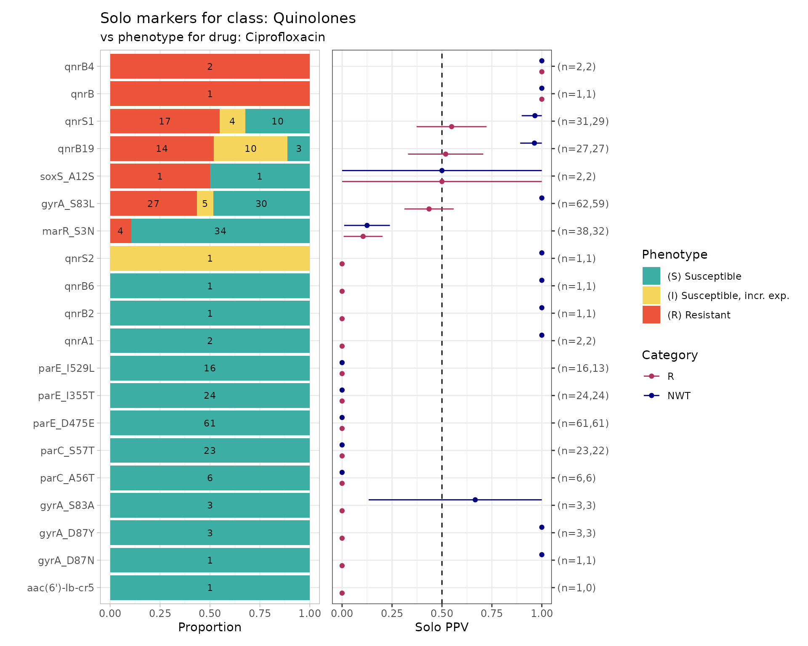
# Output table
soloPPV_cipro$solo_stats
#> # A tibble: 40 × 8
#> marker category x n ppv se ci.lower ci.upper
#> <chr> <chr> <dbl> <int> <dbl> <dbl> <dbl> <dbl>
#> 1 aac(6')-Ib-cr5 R 0 1 0 0 0 0
#> 2 gyrA_D87N R 0 1 0 0 0 0
#> 3 gyrA_D87Y R 0 3 0 0 0 0
#> 4 gyrA_S83A R 0 3 0 0 0 0
#> 5 parC_A56T R 0 6 0 0 0 0
#> 6 parC_S57T R 0 23 0 0 0 0
#> 7 parE_D475E R 0 61 0 0 0 0
#> 8 parE_I355T R 0 24 0 0 0 0
#> 9 parE_I529L R 0 16 0 0 0 0
#> 10 qnrA1 R 0 2 0 0 0 0
#> # ℹ 30 more rows
# Interim matrices with data used to compute stats and plots
soloPPV_cipro$solo_binary
#> # A tibble: 306 × 9
#> id pheno ecoff mic disk R NWT marker value
#> <chr> <sir> <sir> <mic> <dsk> <dbl> <dbl> <chr> <dbl>
#> 1 SAMN03177618 S NWT 0.25 NA 0 1 gyrA_S83L 1
#> 2 SAMN03177619 S NWT 0.12 NA 0 1 gyrA_D87Y 1
#> 3 SAMN03177623 S NWT 0.25 NA 0 1 gyrA_S83L 1
#> 4 SAMN03177631 S NWT 0.25 NA 0 1 gyrA_S83L 1
#> 5 SAMN03177635 S NWT 0.25 NA 0 1 gyrA_S83L 1
#> 6 SAMN03177637 S NWT 0.25 NA 0 1 gyrA_S83L 1
#> 7 SAMN03177638 S NWT 0.25 NA 0 1 qnrB6 1
#> 8 SAMN03177639 S NWT 0.12 NA 0 1 gyrA_S83L 1
#> 9 SAMN03177643 S NWT 0.25 NA 0 1 gyrA_S83L 1
#> 10 SAMN03177646 S NWT 0.25 NA 0 1 gyrA_S83L 1
#> # ℹ 296 more rows
soloPPV_cipro$amr_binary
#> # A tibble: 3,629 × 51
#> id pheno ecoff mic disk R NWT gyrA_S83L gyrA_D87Y gyrA_D87N
#> <chr> <sir> <sir> <mic> <dsk> <dbl> <dbl> <dbl> <dbl> <dbl>
#> 1 SAMN0317… S WT <=0.015 NA 0 0 0 0 0
#> 2 SAMN0317… S WT <=0.015 NA 0 0 0 0 0
#> 3 SAMN0317… S WT <=0.015 NA 0 0 0 0 0
#> 4 SAMN0317… S NWT 0.250 NA 0 1 1 0 0
#> 5 SAMN0317… S NWT 0.120 NA 0 1 0 1 0
#> 6 SAMN0317… S WT <=0.015 NA 0 0 0 0 0
#> 7 SAMN0317… S WT <=0.015 NA 0 0 0 0 0
#> 8 SAMN0317… R NWT >4.000 NA 1 1 1 0 1
#> 9 SAMN0317… S NWT 0.250 NA 0 1 1 0 0
#> 10 SAMN0317… R NWT >4.000 NA 1 1 1 0 1
#> # ℹ 3,619 more rows
#> # ℹ 41 more variables: parC_S80I <dbl>, parE_S458A <dbl>, parC_S80R <dbl>,
#> # parE_L416F <dbl>, qnrB6 <dbl>, gyrA_D87G <dbl>, parC_S57T <dbl>,
#> # parC_E84A <dbl>, soxS_A12S <dbl>, qnrB2 <dbl>, qnrS2 <dbl>,
#> # parC_E84K <dbl>, parC_A56T <dbl>, qnrB19 <dbl>, `aac(6')-Ib-cr5` <dbl>,
#> # parC_E84V <dbl>, parE_I529L <dbl>, parE_S458T <dbl>, parE_E460D <dbl>,
#> # parC_E84G <dbl>, qnrS1 <dbl>, marR_S3N <dbl>, `aac(6')-Ib-cr` <dbl>, …8. Compare markers with assay data
So far we have considered only the impact of individual markers, and their association with categorical S/I/R or WT/NWT calls.
The function amr_upset() takes as binary matrix table
cip_bin summarising ciprofloxacin resistance vs quinolone
markers, generated using get_binary_matrix(), and explores
the distribution of MIC or disk diffusion assay values for all observed
combinations of markers (solo or multiple markers). It visualises the
data in the form of an upset plot, showing the distribution of assay
values and S/I/R calls for each observed marker combination, and returns
a summary of these distributions (including sample size, median and
interquartile range, number and proportion classified as R).
The function returns 2 objects:
summary: data frame containing summarising the data associated with each combination of markersplot: an upset plot showing the distribution of assay values, and breakdown of S/I/R calls, for each observed marker combination
# Compare ciprofloxacin MIC data with quinolone marker combinations,
# using the binary matrix we constructed earlier via get_binary_matrix()
cipro_mic_upset <- amr_upset(
cip_bin,
min_set_size = 2,
assay = "mic",
order = "value"
)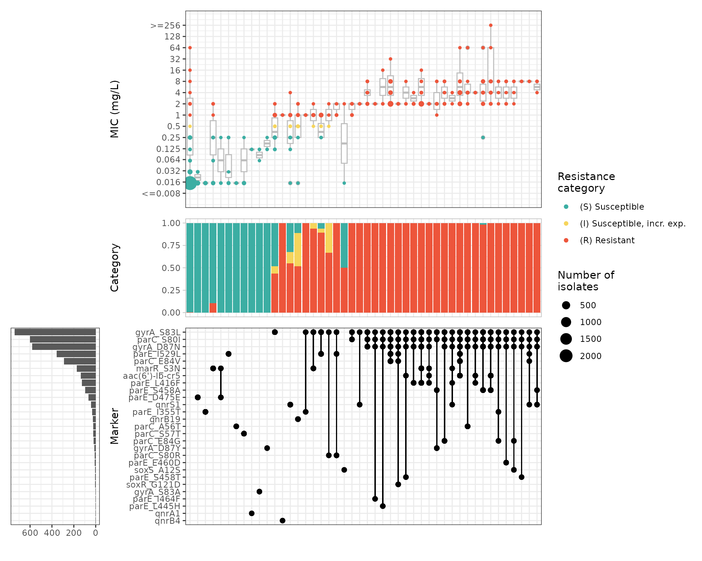
# Output table
cipro_mic_upset$summary
#> # A tibble: 103 × 21
#> marker_list marker_count n combination_id R.n R.ppv R.ci_lower
#> <chr> <dbl> <int> <fct> <dbl> <dbl> <dbl>
#> 1 "" 0 2590 0_0_0_0_0_0_0… 10 0.00386 0.00147
#> 2 "qnrB" 1 1 0_0_0_0_0_0_0… 1 1 1
#> 3 "parE_E460K, gyrA… 2 1 0_0_0_0_0_0_0… 1 1 1
#> 4 "parE_D475E" 1 61 0_0_0_0_0_0_0… 0 0 0
#> 5 "qnrA1" 1 2 0_0_0_0_0_0_0… 0 0 0
#> 6 "gyrA_S83A" 1 3 0_0_0_0_0_0_0… 0 0 0
#> 7 "qnrB4" 1 2 0_0_0_0_0_0_0… 2 1 1
#> 8 "parE_I355T" 1 24 0_0_0_0_0_0_0… 0 0 0
#> 9 "marR_S3N" 1 38 0_0_0_0_0_0_0… 4 0.105 0.00769
#> 10 "marR_S3N, parE_D… 2 4 0_0_0_0_0_0_0… 0 0 0
#> # ℹ 93 more rows
#> # ℹ 14 more variables: R.ci_upper <dbl>, R.denom <int>, NWT.n <dbl>,
#> # NWT.ppv <dbl>, NWT.ci_lower <dbl>, NWT.ci_upper <dbl>, NWT.denom <int>,
#> # median_excludeRangeValues <dbl>, q25_excludeRangeValues <dbl>,
#> # q75_excludeRangeValues <dbl>, n_excludeRangeValues <int>,
#> # median_ignoreRanges <dbl>, q25_ignoreRanges <dbl>, q75_ignoreRanges <dbl>